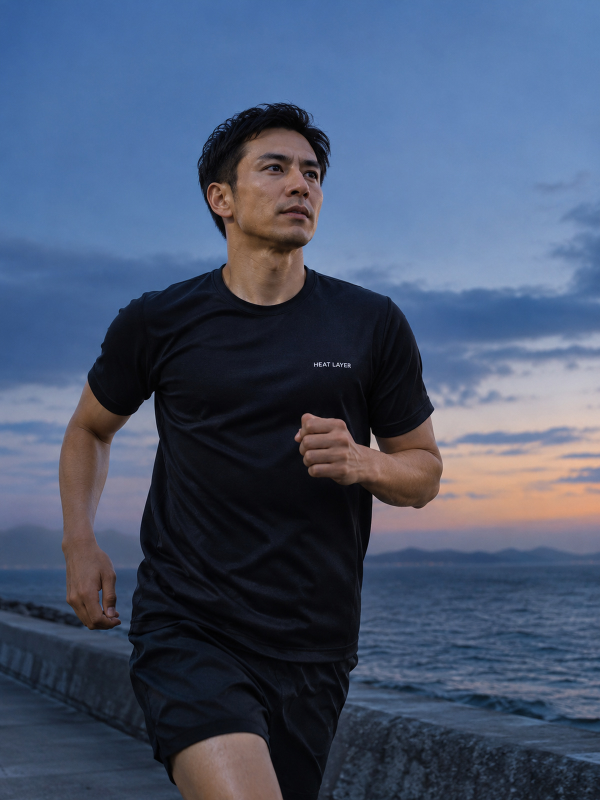
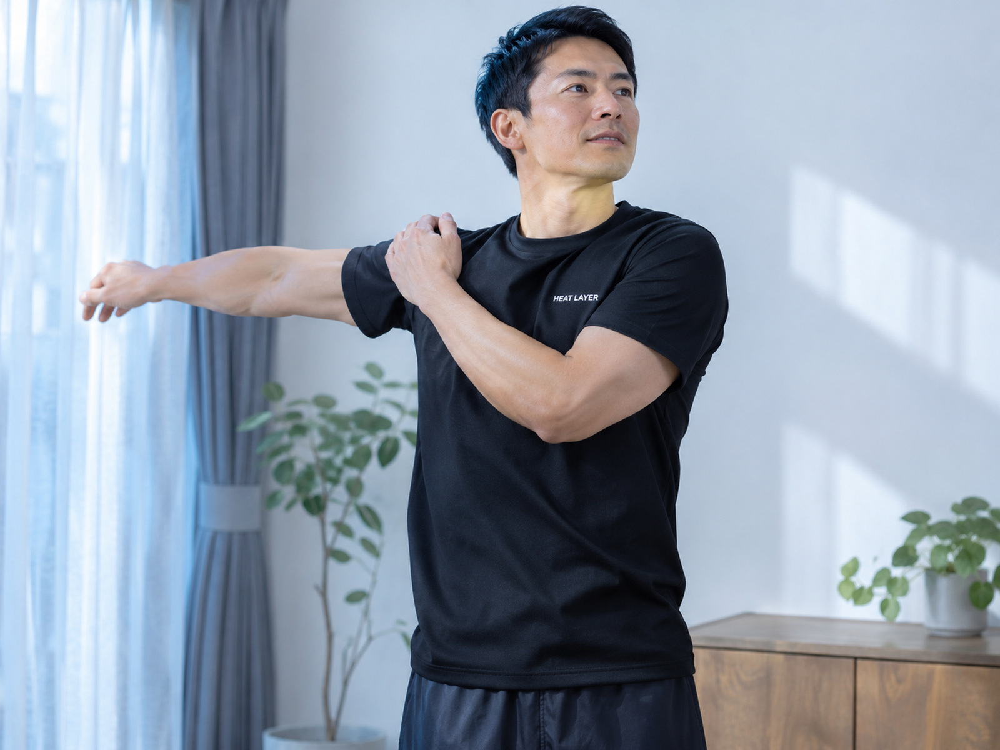
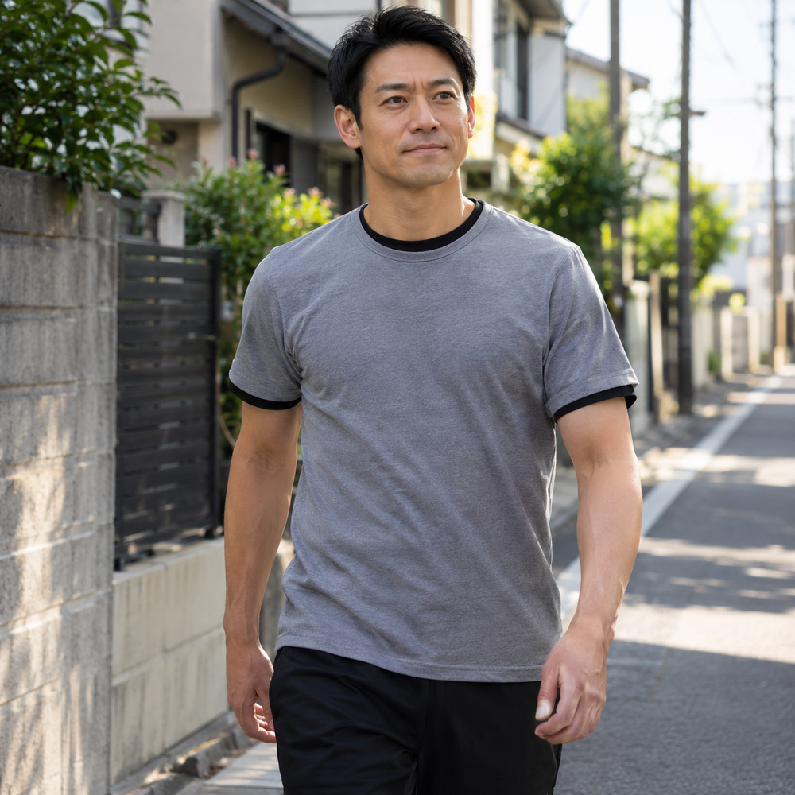
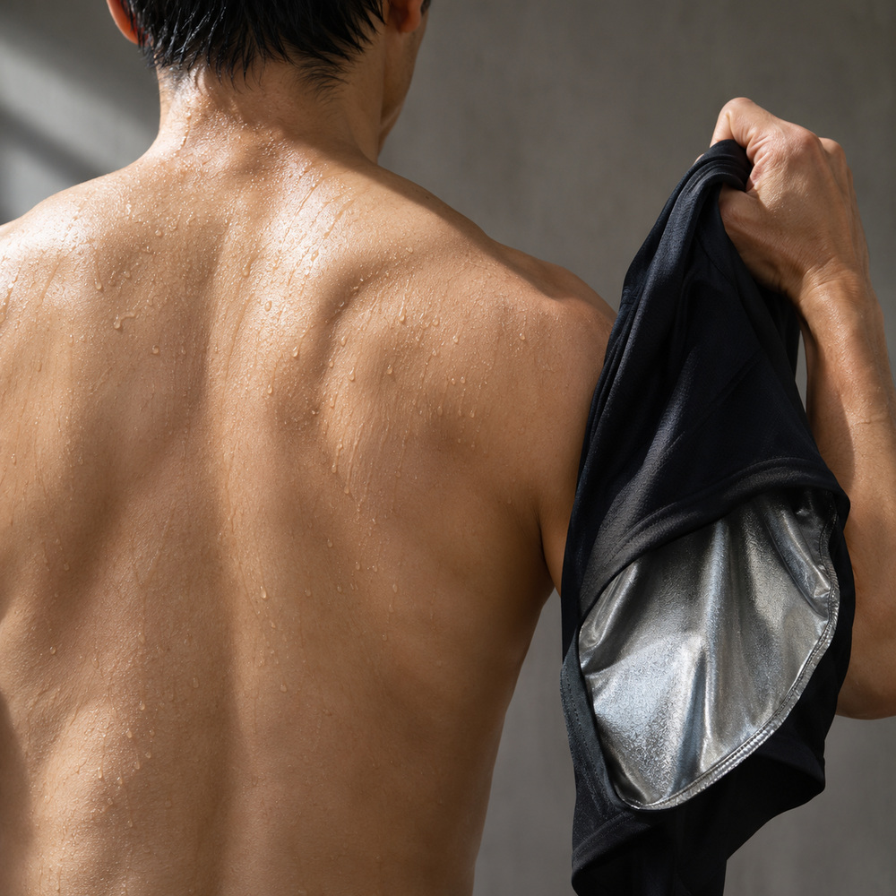

For those who wear our magnetic inner.
Wear
the Heat
with every step you take

磁気インナーの次は、
“汗”を着る。
HEAT LAYER SAUNA SHIRT
磁気インナーご購入者さま 限定価格
¥6,980¥3,980tax in
ISSUE
こんな毎日に、
心当たりはありませんか。
- 01ジムに通っても、汗をかいた実感がない
- 02ウォーキングだけでは、物足りない
- 03サウナに行く時間が、なかなかとれない
- 04サウナスーツはガサガサして、続かなかった
その「もう一歩」を、
一枚のシャツが引き受けます。
CONCEPT
熱を味方に、毎日を整える
体を支えるインナーで、日々を整えてきたあなたへ。
次に足したいのは、気持ちよく汗をかく時間です。
HEAT LAYER は、いつもの運動や家事の時間を、
そのまま“着るサウナ”に変える一枚です。

FEATURE
汗をかくための、三つの設計
01
Silver Coating
熱をとどめる
シルバーの内側
内側全面の保温コートが、動いて生まれた熱をシャツの中にとどめます。いつもの運動のまま、しっかりと汗をかけます。

02
Silent Knit
音のしない
伸縮ニット
ビニールのようなガサガサ音がなく、体の動きに合わせて伸びます。Tシャツの下に着ても目立ちません。

03
Layer Fit
磁気インナーに
重ねられるゆとり
お手持ちの磁気インナーの上に重ねても、窮屈にならないパターン。今のケアに、“汗”をそのまま足せます。

COMPARE
よくあるサウナスーツ
との違い
| HEAT LAYER | 一般的な サウナスーツ | |
| 素材 | 伸縮ニット | ビニール |
| 動いたときの音 | しない | する |
| 普段着の下 | 着られる | 難しい |
| お手入れ | 洗濯機OK | 手洗い |
SCENE
いつもの時間を、汗をかく時間に

- Walkいつものウォーキングに
- Training室内の筋トレ・ヨガに
- Home掃除や片付けの時間に
HOW TO
使い方は、着るだけ
- Step 1素肌、または磁気インナーの上に着る
- Step 2いつもどおり体を動かす目安は1回30分ほど
- Step 3脱いで、洗濯機へ洗濯ネットに入れて洗えます
※ 着用中はこまめに水分を補給してください。体調に異変を感じたらすぐに脱いでください。
PRODUCT

HEAT LAYER サウナシャツ
- Material
- ポリエステル90%・ポリウレタン10%
（内側：シルバーコーティング） - Size
- M / L / XL / 2XL
- Color
- Black
磁気インナーご購入者さま 限定価格
¥6,980¥3,980tax in
- 送料無料
- サイズ交換1回無料
※ 本ページからのご購入に限ります
Q&A
- 磁気インナーの上に重ねて着てもいいですか？
- はい。重ね着を想定した、ゆとりのある設計です。
- サイズはどう選べばいいですか？
- 普段のTシャツと同じサイズをおすすめしています。
- 洗濯はできますか？
- 洗濯ネットに入れて洗濯機で洗えます。乾燥機はお控えください。